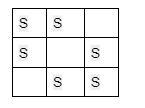
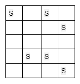
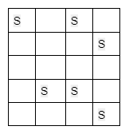
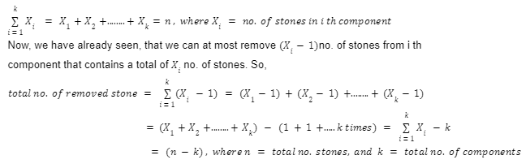
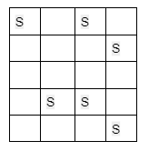

Most Stones Removed with Same Row or Column - DSU: G-53
Problem Statement: There are n stones at some integer coordinate points on a 2D plane. Each coordinate point may have at most one stone.
You need to remove some stones.
A stone can be removed if it shares either the same row or the same column as another stone that has not been removed.
Given an array of stones of length n where stones[i] = [xi, yi] represents the location of the ith stone, return the maximum possible number of stones that you can remove.
Input Format: n=6 stones = [[0, 0],[ 0, 1], [1, 0],[1, 2],[2, 1],[2, 2]]
Result: 5
Explanation: One of the many ways to remove 5 stones is to remove the following stones:
[0,0], [1,0], [0,1], [2,1], [1,2]
Example 2:
Input Format: N = 6, stones = {{0, 0}, {0, 2}, {1, 3}, {3, 1}, {3, 2}, {4, 3}};
Result: 4
Explanation: We can remove the following stones:
[0,0], [0,2], [1,3], [3,1]
Disclaimer: Don't jump directly to the solution, try it out yourself first.
Let’s first understand the thought process that we will be using to solve this problem. In this problem, it is clearly stated that a stone can be removed if it shares either the same row or the same column as another stone that has not been removed. So, we can assume that these types of stones, sharing either the same row or column, are connected and belong to the same group. If we take example 2:

We can easily spot two different groups in this example. The first group includes the stones [0,0], [0,2], [3,2], and [3,1], and the second one includes [1,3] and [4,3].
If we carefully observe, for each group we can remove all the stones leaving one stone intact. So, we can conclude that at most we can remove (size of the group -1) no. of stones from a group as we need to leave one stone untouched for each group.
Now, if we can think of the stones as nodes, the different groups then seem to be the different components of a graph.
Mathematical Explanation of getting the maximum no. of stones:
Let’s assume there are n stones in total. And these n stones have formed k different components each containing Xi no. of stones. This indicates the following:

Until now, we have proved that we can remove a maximum of (n-k) no. of stones from the whole 2D plane, where n is the total number of stones and k is the total number of components.
Now, we have reduced the question in such a way that we just need to connect the stones properly to find out the number of different components and we will easily solve the problem.
Here we are getting the thought of connected components. So, we can easily decide to choose the Disjoint Set data structure to solve this problem.
How to connect the cells containing stones to form a component:
In order to connect the cells we will assume that each entire row and column of the 2D plane is a particular node. Now, with each row, we will connect the column no.s in which the stones are located. But column no. may be the same as the row number. To avoid this, we will convert each column no. to (column no. + total no. of rows) and perform the union of row no. and the converted column number i.e. (column no. + total no. of rows) like the following:

For the above example, to connect the two stones in the cells [0, 0] and [0, 2] of the first row, we will first take row no. i.e. 0(because of 0-based indexing) as a node and then convert column no.s 0 to (0+5) and 2 to (2+5). Then, we will perform the union of (0 and 5) and (0 and 7).
Thus we will connect all the stones that are either in the same row or in the same column to form different connected components.
Approach:
The algorithm steps are as follows:
First, from the stone information, we will find out the maximum row and the maximum column number so that we can get an idea about the size of the 2D plane(i.e. nothing but a matrix).
Then, we need to create a disjoint set of sizes (maximum row index+maximum column index). For safety, we may take a size one more than required.
Now it’s time to connect the cells having a stone. For that we will loop through the given cell information array and for each cell we will extract the row and the column number and do the following:
First, we will convert column no. to (column no. + maximum row index +1).
We will perform the union(either unionBySize() or unionByRank()) of the row number and the converted column number.
We will store the row and the converted column number in a map data structure for later use.
Now, it’s time to calculate the number of components and for that, we will count the number of ultimate parents. Here we will refer to the previously created map.
We just need the nodes in the Disjoint Set that are involved in having a stone. So we have stored the rows and the columns in a map in step 3.3, as they will have stones. Now we just need to check them from the map data structure once for getting the number of ultimate parents.
Finally, we will subtract the no. of components(i.e. no. of ultimate parents) from the total no. of stones and we will get our answer.
Note: If you wish to see the dry run of the above approach, you can watch the video attached to this article.
Code:
#include <bits/stdc++.h>
using namespace std;
class DisjointSet {
vector<int> rank, parent, size;
public:
DisjointSet(int n) {
rank.resize(n + 1, 0);
parent.resize(n + 1);
size.resize(n + 1);
for (int i = 0; i <= n; i++) {
parent[i] = i;
size[i] = 1;
}
}
int findUPar(int node) {
if (node == parent[node])
return node;
return parent[node] = findUPar(parent[node]);
}
void unionByRank(int u, int v) {
int ulp_u = findUPar(u);
int ulp_v = findUPar(v);
if (ulp_u == ulp_v) return;
if (rank[ulp_u] < rank[ulp_v]) {
parent[ulp_u] = ulp_v;
}
else if (rank[ulp_v] < rank[ulp_u]) {
parent[ulp_v] = ulp_u;
}
else {
parent[ulp_v] = ulp_u;
rank[ulp_u]++;
}
}
void unionBySize(int u, int v) {
int ulp_u = findUPar(u);
int ulp_v = findUPar(v);
if (ulp_u == ulp_v) return;
if (size[ulp_u] < size[ulp_v]) {
parent[ulp_u] = ulp_v;
size[ulp_v] += size[ulp_u];
}
else {
parent[ulp_v] = ulp_u;
size[ulp_u] += size[ulp_v];
}
}
};
class Solution {
public:
int maxRemove(vector<vector<int>>& stones, int n) {
int maxRow = 0;
int maxCol = 0;
for (auto it : stones) {
maxRow = max(maxRow, it[0]);
maxCol = max(maxCol, it[1]);
}
DisjointSet ds(maxRow + maxCol + 1);
unordered_map<int, int> stoneNodes;
for (auto it : stones) {
int nodeRow = it[0];
int nodeCol = it[1] + maxRow + 1;
ds.unionBySize(nodeRow, nodeCol);
stoneNodes[nodeRow] = 1;
stoneNodes[nodeCol] = 1;
}
int cnt = 0;
for (auto it : stoneNodes) {
if (ds.findUPar(it.first) == it.first) {
cnt++;
}
}
return n - cnt;
}
};
int main() {
int n = 6;
vector<vector<int>> stones = {
{0, 0}, {0, 2},
{1, 3}, {3, 1},
{3, 2}, {4, 3}
};
Solution obj;
int ans = obj.maxRemove(stones, n);
cout << "The maximum number of stones we can remove is: " << ans << endl;
return 0;
}
Output: The maximum number of stones we can remove is: 4 (For example 2)
Time Complexity: O(N), where N = total no. of stones. Here we have just traversed the given stones array several times. And inside those loops, every operation is apparently taking constant time. So, the time complexity is only the time of traversal of the array.
Space Complexity: O(2* (max row index + max column index)) for the parent and size array inside the Disjoint Set data structure.
import java.io.*;
import java.util.*;
class DisjointSet {
List<Integer> rank = new ArrayList<>();
List<Integer> parent = new ArrayList<>();
List<Integer> size = new ArrayList<>();
public DisjointSet(int n) {
for (int i = 0; i <= n; i++) {
rank.add(0);
parent.add(i);
size.add(1);
}
}
public int findUPar(int node) {
if (node == parent.get(node)) {
return node;
}
int ulp = findUPar(parent.get(node));
parent.set(node, ulp);
return parent.get(node);
}
public void unionByRank(int u, int v) {
int ulp_u = findUPar(u);
int ulp_v = findUPar(v);
if (ulp_u == ulp_v) return;
if (rank.get(ulp_u) < rank.get(ulp_v)) {
parent.set(ulp_u, ulp_v);
} else if (rank.get(ulp_v) < rank.get(ulp_u)) {
parent.set(ulp_v, ulp_u);
} else {
parent.set(ulp_v, ulp_u);
int rankU = rank.get(ulp_u);
rank.set(ulp_u, rankU + 1);
}
}
public void unionBySize(int u, int v) {
int ulp_u = findUPar(u);
int ulp_v = findUPar(v);
if (ulp_u == ulp_v) return;
if (size.get(ulp_u) < size.get(ulp_v)) {
parent.set(ulp_u, ulp_v);
size.set(ulp_v, size.get(ulp_v) + size.get(ulp_u));
} else {
parent.set(ulp_v, ulp_u);
size.set(ulp_u, size.get(ulp_u) + size.get(ulp_v));
}
}
}
class Solution {
int maxRemove(int[][] stones, int n) {
int maxRow = 0;
int maxCol = 0;
for (int i = 0; i < n; i++) {
maxRow = Math.max(maxRow, stones[i][0]);
maxCol = Math.max(maxCol, stones[i][1]);
}
DisjointSet ds = new DisjointSet(maxRow + maxCol + 1);
HashMap<Integer, Integer> stoneNodes = new HashMap<>();
for (int i = 0; i < n; i++) {
int nodeRow = stones[i][0];
int nodeCol = stones[i][1] + maxRow + 1;
ds.unionBySize(nodeRow, nodeCol);
stoneNodes.put(nodeRow, 1);
stoneNodes.put(nodeCol, 1);
}
int cnt = 0;
for (Map.Entry<Integer, Integer> it : stoneNodes.entrySet()) {
if (ds.findUPar(it.getKey()) == it.getKey()) {
cnt++;
}
}
return n - cnt;
}
};
class Main {
public static void main (String[] args) {
int n = 6;
int[][] stones = {
{0, 0}, {0, 2},
{1, 3}, {3, 1},
{3, 2}, {4, 3}
};
Solution obj = new Solution();
int ans = obj.maxRemove(stones, n);
System.out.println("The maximum number of stones we can remove is: " + ans);
}
}
Output: The maximum number of stones we can remove is: 4 (For example 2)
Time Complexity: O(N), where N = total no. of stones. Here we have just traversed the given stones array several times. And inside those loops, every operation is apparently taking constant time. So, the time complexity is only the time of traversal of the array.
Space Complexity: O(2* (max row index + max column index)) for the parent and size array inside the Disjoint Set data structure.
Special thanks to KRITIDIPTA GHOSH for contributing to this article on takeUforward. If you also wish to share your knowledge with the takeUforward fam, please check out this article. If you want to suggest any improvement/correction in this article please mail us at write4tuf@gmail.com